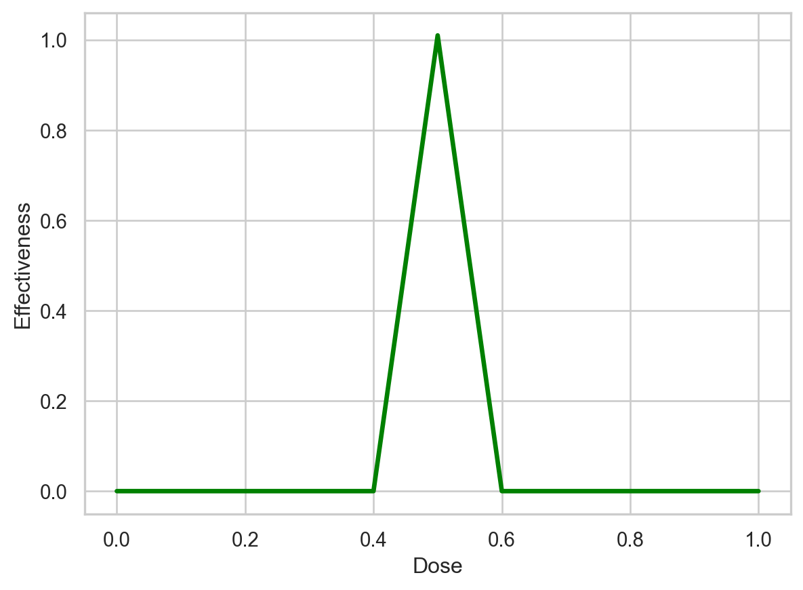
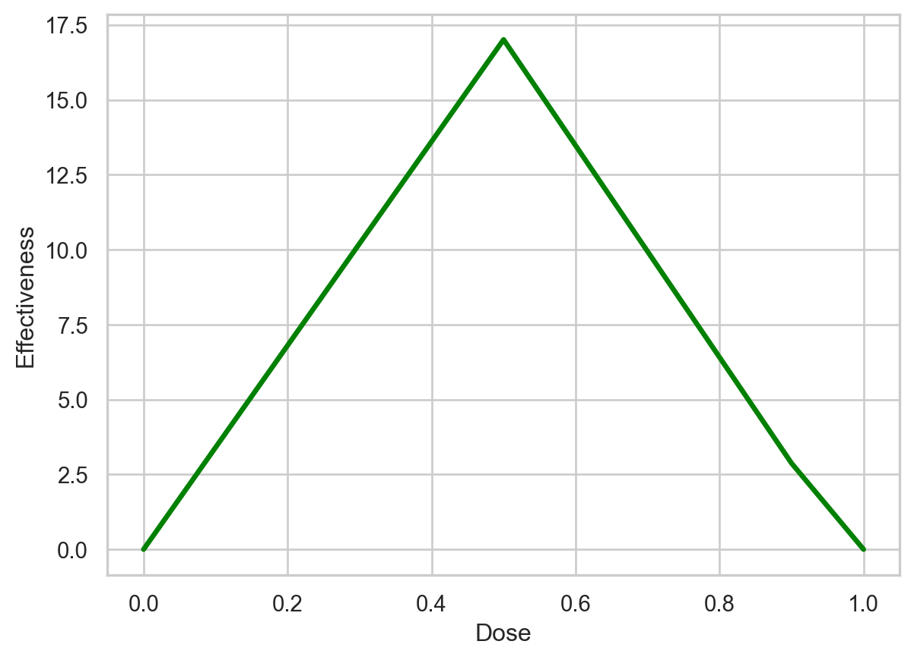

import torch # torch provides basic functions, from setting a random seed (for reproducability) to creating tensors.
import torch.nn as nn # torch.nn allows us to create a neural network.
import torch.nn.functional as F # nn.functional give us access to the activation and loss functions.
from torch.optim import SGD # optim contains many optimizers. Here, we're using SGD, stochastic gradient descent.
import matplotlib.pyplot as plt ## matplotlib allows us to draw graphs.
import seaborn as sns ## seaborn makes it easier to draw nice-looking graphs.
%matplotlib inline22 Machine Learning and Artificial Intelligence
22.1 Jupyter Notebooks
- The Jupyter-Notebook version of this file can be found here: malai.ipynb
22.2 Videos
22.2.1 June, 11th 2024
22.2.2 June, 18th 2024
22.2.2.1 Gradient Descent
Exercise 22.1 (GradDescStepSize) How is the step size calculated?
Exercise 22.2 (GradDescIntercept) How to calculate the new intercept?
Exercise 22.3 (GradDescIntercept) When does the gradient descend stop?
22.2.2.2 Backpropagation
Exercise 22.4 (ChainRuleAndGradientDescent) What are the key components involved in backpropagation?
Exercise 22.5 (BackpropagationNaming) Why is it called backpropagation?
22.2.2.3 ReLU
Exercise 22.6 (Graph ReLU) Draw the graph of a ReLU function.
22.2.2.4 PyTorch Links
22.2.3 June, 25th 2024
22.2.4 CNNs
22.2.4.1 Neural Networks Part 8: Image Classification with Convolutional Neural Networks (CNNs)
Exercise 22.7 (CNNImageRecognition) Why are classical neural networks poor at image recognition?
Exercise 22.8 (CNNFiltersInitialization) How are the filter values in CNNs initialized and optimized?
Exercise 22.9 (CNNFilterInitialization) How are the filter values determined in Convolutional Neural Networks (CNNs)?
Exercise 22.10 (GenNNStockPrediction) What is a limitation of using classical neural networks for stock market prediction?
22.2.5 RNN
22.2.5.1 Recurrent Neural Networks (RNNs), Clearly Explained!!!
Exercise 22.11 (RNNUnrolling) How does the unrolling process work in Recurrent Neural Networks (RNNs)?
Exercise 22.12 (RNNReliability) Why do Recurrent Neural Networks (RNNs) sometimes fail to work reliably?
22.2.6 LSTM
22.2.6.1 Long Short-Term Memory (LSTM), Clearly Explained
Exercise 22.13 (LSTMSigmoidTanh) What are the differences between the sigmoid and tanh activation functions?
Exercise 22.14 (LSTMSigmoidTanh) What is the ?
Exercise 22.15 (LSTMGates) What are the gates in an LSTM network and their functions?
Exercise 22.16 (LSTMLongTermInfo) In which gate is long-term information used in an LSTM network?
Exercise 22.17 (LSTMUpdateGates) In which Gates is it updated in an LSTM?
22.2.7 Pytorch/Lightning
22.2.7.1 Introduction to Coding Neural Networks with PyTorch and Lightning
Exercise 22.18 (PyTorchRequiresGrad) What does requires_grad mean in PyTorch?
22.2.8 July, 2nd 2024
- Word Embedding and Word2Vec, Clearly Explained!!!
- Sequence-to-Sequence (seq2seq) Encoder-Decoder Neural Networks, Clearly Explained!!!
- Attention for Neural Networks, Clearly Explained!!!
22.2.8.1 Embeddings
Exercise 22.19 (NN Strings) Can neural networks process strings?
Exercise 22.20 (Embedding Definition) What is the meaning of word embedding?
Exercise 22.21 (Embedding Dimensions) Why do we need high dimension in word embedding?
22.2.8.2 Sequence to Sequence
Exercise 22.22 (LSTM) Why are LSTMs used?
Exercise 22.23 (Teacher Forcing) Why is teacher forcing used?
Exercise 22.24 (Attention) What is the idea of attention?
22.2.9 Additional Lecture (July, 9th 2024)?
- Transformer Neural Networks, ChatGPT’s foundation, Clearly Explained!!!
- Decoder-Only Transformers, ChatGPTs specific Transformer, Clearly Explained!!!
- The matrix math behind transformer neural networks, one step at a time!!!
- Word Embedding in PyTorch + Lightning
22.2.9.1 Transformers
Exercise 22.25 (ChatGPT) What kind of transformer does ChatGPT use?
Exercise 22.26 (Translation) What kind of NN are used for translation?
Exercise 22.27 (Difference Encoder-Decoder and Decoder Only.) What is the encoder-decoder transformer and the decoder only transformer?
Exercise 22.28 (Weights) How are the weights initialized (a) and trained (b)?
Exercise 22.29 (Order of Words) How is the word order preserved?
Exercise 22.30 (Relationship Between Words) How is the relationship between words modeled?
Exercise 22.31 (Masked Self Attention) What is masked self-attention?
Exercise 22.32 (Softmax) Why is Softmax used to calculate percentage of similarities?
Exercise 22.33 (Softmax Output) How is the percentage output of softmax in Transformers used?
Exercise 22.34 (V´s) What is done with the scaled V´s that we get for each token so far (example: “is”,”what”)?
Exercise 22.35 (Residual Connections) What are residual connections?
Exercise 22.36 (Generate Known Word in Sequence) Why do we want to generate the word in the sequence that comes after “what” that we already know? (Example from video)
Exercise 22.37 (Masked-Self-Attention Values and Bypass) How do we use the two values (“masked-self-attention values + bypass”) which we have for each input? (Example from video: (“What”, ”is”, ”StatQuest”))
22.2.10 Additional Videos
22.2.11 All Videos in a Playlist
- Full Playlist ML-AI
22.3 The StatQuest Introduction to PyTorch
The following code is taken from The StatQuest Introduction to PyTorch. Attribution goes to Josh Starmer, the creator of StatQuest, see Josh Starmer.
Building a neural network in PyTorch means creating a new class with two methods: init() and forward(). The init() method defines and initializes all of the parameters that we want to use, and the forward() method tells PyTorch what should happen during a forward pass through the neural network.
22.3.1 Build a Simple Neural Network in PyTorch
__init__() is the class constructor function, and we use it to initialize the weights and biases.
## create a neural network class by creating a class that inherits from nn.Module.
class BasicNN(nn.Module):
def __init__(self): # __init__() is the class constructor function, and we use it to initialize the weights and biases.
super().__init__() # initialize an instance of the parent class, nn.Model.
## Now create the weights and biases that we need for our neural network.
## Each weight or bias is an nn.Parameter, which gives us the option to optimize the parameter by setting
## requires_grad, which is short for "requires gradient", to True. Since we don't need to optimize any of these
## parameters now, we set requires_grad=False.
##
## NOTE: Because our neural network is already fit to the data, we will input specific values
## for each weight and bias. In contrast, if we had not already fit the neural network to the data,
## we might start with a random initalization of the weights and biases.
self.w00 = nn.Parameter(torch.tensor(1.7), requires_grad=False)
self.b00 = nn.Parameter(torch.tensor(-0.85), requires_grad=False)
self.w01 = nn.Parameter(torch.tensor(-40.8), requires_grad=False)
self.w10 = nn.Parameter(torch.tensor(12.6), requires_grad=False)
self.b10 = nn.Parameter(torch.tensor(0.0), requires_grad=False)
self.w11 = nn.Parameter(torch.tensor(2.7), requires_grad=False)
self.final_bias = nn.Parameter(torch.tensor(-16.), requires_grad=False)
def forward(self, input): ## forward() takes an input value and runs it though the neural network
## illustrated at the top of this notebook.
## the next three lines implement the top of the neural network (using the top node in the hidden layer).
input_to_top_relu = input * self.w00 + self.b00
top_relu_output = F.relu(input_to_top_relu)
scaled_top_relu_output = top_relu_output * self.w01
## the next three lines implement the bottom of the neural network (using the bottom node in the hidden layer).
input_to_bottom_relu = input * self.w10 + self.b10
bottom_relu_output = F.relu(input_to_bottom_relu)
scaled_bottom_relu_output = bottom_relu_output * self.w11
## here, we combine both the top and bottom nodes from the hidden layer with the final bias.
input_to_final_relu = scaled_top_relu_output + scaled_bottom_relu_output + self.final_bias
output = F.relu(input_to_final_relu)
return output # output is the predicted effectiveness for a drug dose.Once we have created the class that defines the neural network, we can create an actual neural network and print out its parameters, just to make sure things are what we expect.
## create the neural network.
model = BasicNN()
## print out the name and value for each parameter
for name, param in model.named_parameters():
print(name, param.data)w00 tensor(1.7000)
b00 tensor(-0.8500)
w01 tensor(-40.8000)
w10 tensor(12.6000)
b10 tensor(0.)
w11 tensor(2.7000)
final_bias tensor(-16.)22.3.2 Use the Neural Network and Graph the Output
Now that we have a neural network, we can use it on a variety of doses to determine which will be effective. Then we can make a graph of these data, and this graph should match the green bent shape fit to the training data that’s shown at the top of this document. So, let’s start by making a sequence of input doses…
## now create the different doses we want to run through the neural network.
## torch.linspace() creates the sequence of numbers between, and including, 0 and 1.
input_doses = torch.linspace(start=0, end=1, steps=11)
# now print out the doses to make sure they are what we expect...
input_dosestensor([0.0000, 0.1000, 0.2000, 0.3000, 0.4000, 0.5000, 0.6000, 0.7000, 0.8000,
0.9000, 1.0000])Now that we have input_doses, let’s run them through the neural network and graph the output…
## create the neural network.
model = BasicNN()
## now run the different doses through the neural network.
output_values = model(input_doses)
## Now draw a graph that shows the effectiveness for each dose.
##
## First, set the style for seaborn so that the graph looks cool.
sns.set(style="whitegrid")
## create the graph (you might not see it at this point, but you will after we save it as a PDF).
sns.lineplot(x=input_doses,
y=output_values,
color='green',
linewidth=2.5)
## now label the y- and x-axes.
plt.ylabel('Effectiveness')
plt.xlabel('Dose')
## optionally, save the graph as a PDF.
# plt.savefig('BasicNN.pdf')Text(0.5, 0, 'Dose')
The graph shows that the neural network fits the training data. In other words, so far, we don’t have any bugs in our code.
22.3.3 Optimize (Train) a Parameter in the Neural Network and Graph the Output
Now that we know how to create and use a simple neural network, and we can graph the output relative to the input, let’s see how to train a neural network. The first thing we need to do is tell PyTorch which parameter (or parameters) we want to train, and we do that by setting requiresgrad=True. In this example, we’ll train finalbias.
Now we create a neural network by creating a class that inherits from nn.Module.
NOTE: This code is the same as before, except we changed the class name to BasicNN_train and we modified final_bias in two ways:
1) we set the value of the tensor to 0, and
2) we set "requires_grad=True".Now let’s graph the output of BasicNN_train, which is currently not optimized, and compare it to the graph we drew earlier of the optimized neural network.
class BasicNN_train(nn.Module):
def __init__(self): # __init__ is the class constructor function, and we use it to initialize the weights and biases.
super().__init__() # initialize an instance of the parent class, nn.Module.
self.w00 = nn.Parameter(torch.tensor(1.7), requires_grad=False)
self.b00 = nn.Parameter(torch.tensor(-0.85), requires_grad=False)
self.w01 = nn.Parameter(torch.tensor(-40.8), requires_grad=False)
self.w10 = nn.Parameter(torch.tensor(12.6), requires_grad=False)
self.b10 = nn.Parameter(torch.tensor(0.0), requires_grad=False)
self.w11 = nn.Parameter(torch.tensor(2.7), requires_grad=False)
## we want to modify final_bias to demonstrate how to optimize it with backpropagation.
## The optimal value for final_bias is -16...
# self.final_bias = nn.Parameter(torch.tensor(-16.), requires_grad=False)
## ...so we set it to 0 and tell Pytorch that it now needs to calculate the gradient for this parameter.
self.final_bias = nn.Parameter(torch.tensor(0.), requires_grad=True)
def forward(self, input):
input_to_top_relu = input * self.w00 + self.b00
top_relu_output = F.relu(input_to_top_relu)
scaled_top_relu_output = top_relu_output * self.w01
input_to_bottom_relu = input * self.w10 + self.b10
bottom_relu_output = F.relu(input_to_bottom_relu)
scaled_bottom_relu_output = bottom_relu_output * self.w11
input_to_final_relu = scaled_top_relu_output + scaled_bottom_relu_output + self.final_bias
output = F.relu(input_to_final_relu)
return output## create the neural network.
model = BasicNN_train()
## now run the different doses through the neural network.
output_values = model(input_doses)
## Now draw a graph that shows the effectiveness for each dose.
##
## set the style for seaborn so that the graph looks cool.
sns.set(style="whitegrid")
## create the graph (you might not see it at this point, but you will after we save it as a PDF).
sns.lineplot(x=input_doses,
y=output_values.detach(), ## NOTE: because final_bias has a gradident, we call detach()
## to return a new tensor that only has the value and not the gradient.
color='green',
linewidth=2.5)
## now label the y- and x-axes.
plt.ylabel('Effectiveness')
plt.xlabel('Dose')
## lastly, save the graph as a PDF.
# plt.savefig('BasicNN_train.pdf')Text(0.5, 0, 'Dose')
The graph shows that when the dose is 0.5, the output from the unoptimized neural network is 17, which is wrong, since the output value should be 1. So, now that we have a parameter we can optimize, let’s create some training data that we can use to optimize it.
## create the training data for the neural network.
inputs = torch.tensor([0., 0.5, 1.])
labels = torch.tensor([0., 1., 0.])..and now let’s use that training data to train (or optimize) final_bias.
## create the neural network we want to train.
model = BasicNN_train()
optimizer = SGD(model.parameters(), lr=0.1) ## here we're creating an optimizer to train the neural network.
## NOTE: There are a bunch of different ways to optimize a neural network.
## In this example, we'll use Stochastic Gradient Descent (SGD). However,
## another popular algortihm is Adam (which will be covered in a StatQuest).
print("Final bias, before optimization: " + str(model.final_bias.data) + "\n")
## this is the optimization loop. Each time the optimizer sees all of the training data is called an "epoch".
for epoch in range(100):
## we create and initialize total_loss for each epoch so that we can evaluate how well model fits the
## training data. At first, when the model doesn't fit the training data very well, total_loss
## will be large. However, as gradient descent improves the fit, total_loss will get smaller and smaller.
## If total_loss gets really small, we can decide that the model fits the data well enough and stop
## optimizing the fit. Otherwise, we can just keep optimizing until we reach the maximum number of epochs.
total_loss = 0
## this internal loop is where the optimizer sees all of the training data and where we
## calculate the total_loss for all of the training data.
for iteration in range(len(inputs)):
input_i = inputs[iteration] ## extract a single input value (a single dose)...
label_i = labels[iteration] ## ...and its corresponding label (the effectiveness for the dose).
output_i = model(input_i) ## calculate the neural network output for the input (the single dose).
loss = (output_i - label_i)**2 ## calculate the loss for the single value.
## NOTE: Because output_i = model(input_i), "loss" has a connection to "model"
## and the derivative (calculated in the next step) is kept and accumulated
## in "model".
loss.backward() # backward() calculates the derivative for that single value and adds it to the previous one.
total_loss += float(loss) # accumulate the total loss for this epoch.
if (total_loss < 0.0001):
print("Num steps: " + str(epoch))
break
optimizer.step() ## take a step toward the optimal value.
optimizer.zero_grad() ## This zeroes out the gradient stored in "model".
## Remember, by default, gradients are added to the previous step (the gradients are accumulated),
## and we took advantage of this process to calculate the derivative one data point at a time.
## NOTE: "optimizer" has access to "model" because of how it was created with the call
## (made earlier): optimizer = SGD(model.parameters(), lr=0.1).
## ALSO NOTE: Alternatively, we can zero out the gradient with model.zero_grad().
if epoch % 10 == 0:
print("Step: " + str(epoch) + " Final Bias: " + str(model.final_bias.data) + "\n")
## now go back to the start of the loop and go through another epoch.
print("Total loss: " + str(total_loss))
print("Final bias, after optimization: " + str(model.final_bias.data))Final bias, before optimization: tensor(0.)
Step: 0 Final Bias: tensor(-3.2020)
Step: 10 Final Bias: tensor(-14.6348)
Step: 20 Final Bias: tensor(-15.8623)
Step: 30 Final Bias: tensor(-15.9941)
Num steps: 34
Total loss: 6.58966600894928e-05
Final bias, after optimization: tensor(-16.0019)So, if everything worked correctly, the optimizer should have converged on final_bias = 16.0019 after 34 steps, or epochs. BAM!
Lastly, let’s graph the output from the optimized neural network and see if it’s the same as what we started with. If so, then the optimization worked.
## run the different doses through the neural network
output_values = model(input_doses)
## set the style for seaborn so that the graph looks cool.
sns.set(style="whitegrid")
## create the graph (you might not see it at this point, but you will after we save it as a PDF).
sns.lineplot(x=input_doses,
y=output_values.detach(), ## NOTE: we call detach() because final_bias has a gradient
color='green',
linewidth=2.5)
## now label the y- and x-axes.
plt.ylabel('Effectiveness')
plt.xlabel('Dose')
## lastly, save the graph as a PDF.
# plt.savefig('BascNN_optimized.pdf')Text(0.5, 0, 'Dose')And we see that the optimized model results in the same graph that we started with, so the optimization worked as expected.
22.4 Build a Long Short-Term Memory unit by hand using PyTorch + Lightning
The following code is based on Long Short-Term Memory with PyTorch + Lightning and StatQuest: Long Short-Term Memory (LSTM) with PyTorch + Lightning!!!. Attribution goes to Josh Starmer, the creator of StatQuest, see Josh Starmer.
import torch # torch will allow us to create tensors.
import torch.nn as nn # torch.nn allows us to create a neural network.
import torch.nn.functional as F # nn.functional give us access to the activation and loss functions.
from torch.optim import Adam # optim contains many optimizers. This time we're using Adam
import lightning as L # lightning has tons of cool tools that make neural networks easier
from torch.utils.data import TensorDataset, DataLoader # these are needed for the training dataA Long Short-Term Memory (LSTM) unit is a type of neural network, and that means we need to create a new class. To make it easy to train the LSTM, this class will inherit from LightningModule and we’ll create the following methods:
init()to initialize the Weights and Biases and keep track of a few other house keeping things.lstm_unit()to do the LSTM math. For example, to calculate the percentage of the long-term memory to remember.forward()to make a forward pass through the unrolled LSTM. In other words forward() callslstm_unit()for each data point.configure_optimizers()to configure the opimimizer. In the past, we have use SGD (Stochastic Gradient Descent), however, in this tutorial we’ll change things up and use Adam, another popular algorithm for optimizing the Weights and Biases.training_step()to pass the training data to forward(), calculate the loss and to keep track of the loss values in a log file.
class LSTMbyHand(L.LightningModule):
def __init__(self):
super().__init__()
L.seed_everything(seed=42)
## NOTE: nn.LSTM() uses random values from a uniform distribution to initialize the tensors
## Here we can do it 2 different ways 1) Normal Distribution and 2) Uniform Distribution
## We'll start with the Normal distribution.
mean = torch.tensor(0.0)
std = torch.tensor(1.0)
## NOTE: In this case, I'm only using the normal distribution for the Weights.
## All Biases are initialized to 0.
##
## These are the Weights and Biases in the first stage, which determines what percentage
## of the long-term memory the LSTM unit will remember.
self.wlr1 = nn.Parameter(torch.normal(mean=mean, std=std), requires_grad=True)
self.wlr2 = nn.Parameter(torch.normal(mean=mean, std=std), requires_grad=True)
self.blr1 = nn.Parameter(torch.tensor(0.), requires_grad=True)
## These are the Weights and Biases in the second stage, which determines the new
## potential long-term memory and what percentage will be remembered.
self.wpr1 = nn.Parameter(torch.normal(mean=mean, std=std), requires_grad=True)
self.wpr2 = nn.Parameter(torch.normal(mean=mean, std=std), requires_grad=True)
self.bpr1 = nn.Parameter(torch.tensor(0.), requires_grad=True)
self.wp1 = nn.Parameter(torch.normal(mean=mean, std=std), requires_grad=True)
self.wp2 = nn.Parameter(torch.normal(mean=mean, std=std), requires_grad=True)
self.bp1 = nn.Parameter(torch.tensor(0.), requires_grad=True)
## These are the Weights and Biases in the third stage, which determines the
## new short-term memory and what percentage will be sent to the output.
self.wo1 = nn.Parameter(torch.normal(mean=mean, std=std), requires_grad=True)
self.wo2 = nn.Parameter(torch.normal(mean=mean, std=std), requires_grad=True)
self.bo1 = nn.Parameter(torch.tensor(0.), requires_grad=True)
## We can also initialize all Weights and Biases using a uniform distribution. This is
## how nn.LSTM() does it.
# self.wlr1 = nn.Parameter(torch.rand(1), requires_grad=True)
# self.wlr2 = nn.Parameter(torch.rand(1), requires_grad=True)
# self.blr1 = nn.Parameter(torch.rand(1), requires_grad=True)
# self.wpr1 = nn.Parameter(torch.rand(1), requires_grad=True)
# self.wpr2 = nn.Parameter(torch.rand(1), requires_grad=True)
# self.bpr1 = nn.Parameter(torch.rand(1), requires_grad=True)
# self.wp1 = nn.Parameter(torch.rand(1), requires_grad=True)
# self.wp2 = nn.Parameter(torch.rand(1), requires_grad=True)
# self.bp1 = nn.Parameter(torch.rand(1), requires_grad=True)
# self.wo1 = nn.Parameter(torch.rand(1), requires_grad=True)
# self.wo2 = nn.Parameter(torch.rand(1), requires_grad=True)
# self.bo1 = nn.Parameter(torch.rand(1), requires_grad=True)
def lstm_unit(self, input_value, long_memory, short_memory):
## lstm_unit does the math for a single LSTM unit.
## NOTES:
## long term memory is also called "cell state"
## short term memory is also called "hidden state"
## 1) The first stage determines what percent of the current long-term memory
## should be remembered
long_remember_percent = torch.sigmoid((short_memory * self.wlr1) +
(input_value * self.wlr2) +
self.blr1)
## 2) The second stage creates a new, potential long-term memory and determines what
## percentage of that to add to the current long-term memory
potential_remember_percent = torch.sigmoid((short_memory * self.wpr1) +
(input_value * self.wpr2) +
self.bpr1)
potential_memory = torch.tanh((short_memory * self.wp1) +
(input_value * self.wp2) +
self.bp1)
## Once we have gone through the first two stages, we can update the long-term memory
updated_long_memory = ((long_memory * long_remember_percent) +
(potential_remember_percent * potential_memory))
## 3) The third stage creates a new, potential short-term memory and determines what
## percentage of that should be remembered and used as output.
output_percent = torch.sigmoid((short_memory * self.wo1) +
(input_value * self.wo2) +
self.bo1)
updated_short_memory = torch.tanh(updated_long_memory) * output_percent
## Finally, we return the updated long and short-term memories
return([updated_long_memory, updated_short_memory])
def forward(self, input):
## forward() unrolls the LSTM for the training data by calling lstm_unit() for each day of training data
## that we have. forward() also keeps track of the long and short-term memories after each day and returns
## the final short-term memory, which is the 'output' of the LSTM.
long_memory = 0 # long term memory is also called "cell state" and indexed with c0, c1, ..., cN
short_memory = 0 # short term memory is also called "hidden state" and indexed with h0, h1, ..., cN
day1 = input[0]
day2 = input[1]
day3 = input[2]
day4 = input[3]
## Day 1
long_memory, short_memory = self.lstm_unit(day1, long_memory, short_memory)
## Day 2
long_memory, short_memory = self.lstm_unit(day2, long_memory, short_memory)
## Day 3
long_memory, short_memory = self.lstm_unit(day3, long_memory, short_memory)
## Day 4
long_memory, short_memory = self.lstm_unit(day4, long_memory, short_memory)
##### Now return short_memory, which is the 'output' of the LSTM.
return short_memory
def configure_optimizers(self): # this configures the optimizer we want to use for backpropagation.
# return Adam(self.parameters(), lr=0.1) # NOTE: Setting the learning rate to 0.1 trains way faster than
# using the default learning rate, lr=0.001, which requires a lot more
# training. However, if we use the default value, we get
# the exact same Weights and Biases that I used in
# the LSTM Clearly Explained StatQuest video. So we'll use the
# default value.
return Adam(self.parameters())
def training_step(self, batch, batch_idx): # take a step during gradient descent.
input_i, label_i = batch # collect input
output_i = self.forward(input_i[0]) # run input through the neural network
loss = (output_i - label_i)**2 ## loss = sum of squared residual
# Logging the loss and the predicted values so we can evaluate the training:
self.log("train_loss", loss)
## NOTE: Our dataset consists of two sequences of values representing Company A and Company B
## For Company A, the goal is to predict that the value on Day 5 = 0, and for Company B,
## the goal is to predict that the value on Day 5 = 1. We use label_i, the value we want to
## predict, to keep track of which company we just made a prediction for and
## log that output value in a company specific file
if (label_i == 0):
self.log("out_0", output_i)
else:
self.log("out_1", output_i)
return lossOnce we have created the class that defines an LSTM, we can use it to create a model and print out the randomly initialized Weights and Biases. Then, just for fun, we’ll see what those random Weights and Biases predict for Company A and Company B. If they are good predictions, then we’re done! However, the chances of getting good predictions from random values is very small.
## Create the model object, print out parameters and see how well
## the untrained LSTM can make predictions...
model = LSTMbyHand()
print("Before optimization, the parameters are...")
for name, param in model.named_parameters():
print(name, param.data)
print("\nNow let's compare the observed and predicted values...")
## NOTE: To make predictions, we pass in the first 4 days worth of stock values
## in an array for each company. In this case, the only difference between the
## input values for Company A and B occurs on the first day. Company A has 0 and
## Company B has 1.
print("Company A: Observed = 0, Predicted =",
model(torch.tensor([0., 0.5, 0.25, 1.])).detach())
print("Company B: Observed = 1, Predicted =",
model(torch.tensor([1., 0.5, 0.25, 1.])).detach())Before optimization, the parameters are...
wlr1 tensor(0.3367)
wlr2 tensor(0.1288)
blr1 tensor(0.)
wpr1 tensor(0.2345)
wpr2 tensor(0.2303)
bpr1 tensor(0.)
wp1 tensor(-1.1229)
wp2 tensor(-0.1863)
bp1 tensor(0.)
wo1 tensor(2.2082)
wo2 tensor(-0.6380)
bo1 tensor(0.)
Now let's compare the observed and predicted values...
Company A: Observed = 0, Predicted = tensor(-0.0377)
Company B: Observed = 1, Predicted = tensor(-0.0383)With the unoptimized paramters, the predicted value for Company A, -0.0377, isn’t terrible, since it is relatively close to the observed value, 0. However, the predicted value for Company B, -0.0383, is terrible, because it is relatively far from the observed value, 1. So, that means we need to train the LSTM.
22.4.1 Train the LSTM unit and use Lightning and TensorBoard to evaluate: Part 1 - Getting Started
Since we are using Lightning training, training the LSTM we created by hand is pretty easy. All we have to do is create the training data and put it into a DataLoader…
## create the training data for the neural network.
inputs = torch.tensor([[0., 0.5, 0.25, 1.], [1., 0.5, 0.25, 1.]])
labels = torch.tensor([0., 1.])
dataset = TensorDataset(inputs, labels)
dataloader = DataLoader(dataset)
# show the training data
for i, (input_i, label_i) in enumerate(dataloader):
print("Training data: ", input_i, label_i)Training data: tensor([[0.0000, 0.5000, 0.2500, 1.0000]]) tensor([0.])
Training data: tensor([[1.0000, 0.5000, 0.2500, 1.0000]]) tensor([1.])…and then create a Lightning Trainer, L.Trainer, and fit it to the training data. NOTE: We are starting with 2000 epochs. This may be enough to successfully optimize all of the parameters, but it might not. We’ll find out after we compare the predictions to the observed values.
trainer = L.Trainer(max_epochs=2000) # with default learning rate, 0.001 (this tiny learning rate makes learning slow)
trainer.fit(model, train_dataloaders=dataloader)Now that we’ve trained the model with 2000 epochs, we can see how good the predictions are…
print("\nNow let's compare the observed and predicted values...")
print("Company A: Observed = 0, Predicted =", model(torch.tensor([0., 0.5, 0.25, 1.])).detach())
print("Company B: Observed = 1, Predicted =", model(torch.tensor([1., 0.5, 0.25, 1.])).detach())
Now let's compare the observed and predicted values...
Company A: Observed = 0, Predicted = tensor(0.4342)
Company B: Observed = 1, Predicted = tensor(0.6171)Unfortunately, these predictions are terrible. So it seems like we’ll have to do more training. However, it would be awesome if we could be confident that more training will actually improve the predictions. If not, we can spare ourselves a lot of time, and potentially money, and just give up. So, before we dive into more training, let’s look at the loss values and predictions that we saved in log files with TensorBoard. TensorBoard will graph everything that we logged during training, making it super easy to see if things are headed in the right direction or not.
To get TensorBoard working:
- First, check to see if the TensorBoard plugin is installed. If it’s not, install it with the following command: pip install tensorboard
- Next, run the following command:
tensorboard --logdir lightning_logs
NOTE: If your graphs look messed up and you see a bunch of different lines, instead of just one red line per graph, then check where this notebook is saved for a directory called lightning_logs. Delete lightning_logs and the re-run everything in this notebook. One source of problems with the graphs is that every time we train a model, a new batch of log files is created and stored in lightning_logs and TensorBoard, by default, will plot all of them. You can turn off unwanted log files in TensorBoard, and we’ll do this later on in this notebook, but for now, the easiest thing to do is to start with a clean slate.
Anyway, if we look at the loss (trainloss), we see that it is going down, which is good, but it still has further to go. When we look at the predictions for Company A (out0), we see that they started out pretty good, close to 0, but then got really bad early on in training, shooting all the way up to 0.5, but are starting to get smaller. In contrast, when we look at the predictions for Company B (out_1), we see that they started out really bad, close to 0, but have been getting better ever since and look like they could continue to get better if we kept training.
In summary, the graphs seem to suggest that if we continued training our model, the predictions would improve. So let’s add more epochs to the training.
22.4.2 Optimizing (Training) the Weights and Biases in the LSTM that we made by hand: Part 2 - Adding More Epochs without Starting Over
The good news is that because we’re using Lightning, we can pick up where we left off training without having to start over from scratch. This is because when we train with Lightning, it creates checkpoint files that keep track of the Weights and Biases as they change. As a result, all we have to do to pick up where we left off is tell the Trainer where the checkpoint files are located. This is awesome and will save us a lot of time since we don’t have to retrain the first 2000 epochs. So let’s add an additional 1000 epochs to the training.
## First, find where the most recent checkpoint files are stored
path_to_checkpoint = trainer.checkpoint_callback.best_model_path ## By default, "best" = "most recent"
print("The new trainer will start where the last left off, and the check point data is here: " +
path_to_checkpoint + "\n")
## Then create a new Lightning Trainer
trainer = L.Trainer(max_epochs=3000) # Before, max_epochs=2000, so, by setting it to 3000, we're adding 1000 more.
## And then call fit() using the path to the most recent checkpoint files
## so that we can pick up where we left off.
trainer.fit(model, train_dataloaders=dataloader, ckpt_path=path_to_checkpoint)The new trainer will start where the last left off, and the check point data is here: /Users/bartz/workspace/Hyperparameter-Tuning-Cookbook/lightning_logs/version_450/checkpoints/epoch=1999-step=4000.ckpt
Now that we have added 1000 epochs to the training, let’s check the predictions…
print("\nNow let's compare the observed and predicted values...")
print("Company A: Observed = 0, Predicted =", model(torch.tensor([0., 0.5, 0.25, 1.])).detach())
print("Company B: Observed = 1, Predicted =", model(torch.tensor([1., 0.5, 0.25, 1.])).detach())
Now let's compare the observed and predicted values...
Company A: Observed = 0, Predicted = tensor(0.2708)
Company B: Observed = 1, Predicted = tensor(0.7534)The blue lines in each graph represents the values we logged during the extra 1000 epochs. The loss is getting smaller and the predictions for both companies are improving! Hooray!!! However, because it looks like there is even more room for improvement, let’s add 2000 more epochs to the training.
## First, find where the most recent checkpoint files are stored
path_to_checkpoint = trainer.checkpoint_callback.best_model_path ## By default, "best" = "most recent"
print("The new trainer will start where the last left off, and the check point data is here: " +
path_to_checkpoint + "\n")
## Then create a new Lightning Trainer
trainer = L.Trainer(max_epochs=5000) # Before, max_epochs=3000, so, by setting it to 5000, we're adding 2000 more.
## And then call fit() using the path to the most recent checkpoint files
## so that we can pick up where we left off.
trainer.fit(model, train_dataloaders=dataloader, ckpt_path=path_to_checkpoint)The new trainer will start where the last left off, and the check point data is here: /Users/bartz/workspace/Hyperparameter-Tuning-Cookbook/lightning_logs/version_451/checkpoints/epoch=2999-step=6000.ckpt
Now that we have added 2000 more epochs to the training (for a total of 5000 epochs), let’s check the predictions.
print("\nNow let's compare the observed and predicted values...")
print("Company A: Observed = 0, Predicted =", model(torch.tensor([0., 0.5, 0.25, 1.])).detach())
print("Company B: Observed = 1, Predicted =", model(torch.tensor([1., 0.5, 0.25, 1.])).detach())
Now let's compare the observed and predicted values...
Company A: Observed = 0, Predicted = tensor(0.0022)
Company B: Observed = 1, Predicted = tensor(0.9693)The prediction for Company A is super close to 0, which is exactly what we want, and the prediction for Company B is close to 1, which is also what we want.
The dark red lines show how things changed when we added an additional 2000 epochs to the training, for a total of 5000 epochs. Now we see that the loss (train_loss) and the predictions for each company appear to be tapering off, suggesting that adding more epochs may not improve the predictions much, so we’re done!
Lastly, let’s print out the final estimates for the Weights and Biases. In theory, they should be the same (within rounding error) as what we used in the StatQuest on Long Short-Term Memory and seen in the diagram of the LSTM unit at the top of this Jupyter notebook.
print("After optimization, the parameters are...")
for name, param in model.named_parameters():
print(name, param.data)After optimization, the parameters are...
wlr1 tensor(2.7043)
wlr2 tensor(1.6307)
blr1 tensor(1.6234)
wpr1 tensor(1.9983)
wpr2 tensor(1.6525)
bpr1 tensor(0.6204)
wp1 tensor(1.4122)
wp2 tensor(0.9393)
bp1 tensor(-0.3217)
wo1 tensor(4.3848)
wo2 tensor(-0.1943)
bo1 tensor(0.5935)22.5 Using and optimzing the PyTorch LSTM, nn.LSTM()
Now that we know how to create an LSTM unit by hand, train it, and then use it to make good predictions, let’s learn how to take advantage of PyTorch’s nn.LSTM() function. For the most part, using nn.LSTM() allows us to simplify the init() function and the forward() function. The other big difference is that this time, we’re not going to try and recreate the parameter values we used in the StatQuest on Long Short-Term Memory, and that means we can set the learning rate for the Adam to 0.1. This will speed up training a lot. Everything else stays the same.
## Instead of coding an LSTM by hand, let's see what we can do with PyTorch's nn.LSTM()
class LightningLSTM(L.LightningModule):
def __init__(self): # __init__() is the class constructor function, and we use it to initialize the Weights and Biases.
super().__init__() # initialize an instance of the parent class, LightningModule.
L.seed_everything(seed=42)
## input_size = number of features (or variables) in the data. In our example
## we only have a single feature (value)
## hidden_size = this determines the dimension of the output
## in other words, if we set hidden_size=1, then we have 1 output node
## if we set hidden_size=50, then we hve 50 output nodes (that can then be 50 input
## nodes to a subsequent fully connected neural network.
self.lstm = nn.LSTM(input_size=1, hidden_size=1)
def forward(self, input):
## transpose the input vector
input_trans = input.view(len(input), 1)
lstm_out, temp = self.lstm(input_trans)
## lstm_out has the short-term memories for all inputs. We make our prediction with the last one
prediction = lstm_out[-1]
return prediction
def configure_optimizers(self): # this configures the optimizer we want to use for backpropagation.
return Adam(self.parameters(), lr=0.1) ## we'll just go ahead and set the learning rate to 0.1
def training_step(self, batch, batch_idx): # take a step during gradient descent.
input_i, label_i = batch # collect input
output_i = self.forward(input_i[0]) # run input through the neural network
loss = (output_i - label_i)**2 ## loss = squared residual
self.log("train_loss", loss)
if (label_i == 0):
self.log("out_0", output_i)
else:
self.log("out_1", output_i)
return lossNow let’s create the model and print out the initial Weights and Biases and predictions.
model = LightningLSTM() # First, make model from the class
## print out the name and value for each parameter
print("Before optimization, the parameters are...")
for name, param in model.named_parameters():
print(name, param.data)
print("\nNow let's compare the observed and predicted values...")
print("Company A: Observed = 0, Predicted =", model(torch.tensor([0., 0.5, 0.25, 1.])).detach())
print("Company B: Observed = 1, Predicted =", model(torch.tensor([1., 0.5, 0.25, 1.])).detach())Before optimization, the parameters are...
lstm.weight_ih_l0 tensor([[ 0.7645],
[ 0.8300],
[-0.2343],
[ 0.9186]])
lstm.weight_hh_l0 tensor([[-0.2191],
[ 0.2018],
[-0.4869],
[ 0.5873]])
lstm.bias_ih_l0 tensor([ 0.8815, -0.7336, 0.8692, 0.1872])
lstm.bias_hh_l0 tensor([ 0.7388, 0.1354, 0.4822, -0.1412])
Now let's compare the observed and predicted values...
Company A: Observed = 0, Predicted = tensor([0.6675])
Company B: Observed = 1, Predicted = tensor([0.6665])As expected, the predictions are bad, so we will train the model. However, because we’ve increased the learning rate to 0.1, we only need to train for 300 epochs.
## NOTE: Because we have set Adam's learning rate to 0.1, we will train much, much faster.
## Before, with the hand made LSTM and the default learning rate, 0.001, it took about 5000 epochs to fully train
## the model. Now, with the learning rate set to 0.1, we only need 300 epochs. Now, because we are doing so few epochs,
## we have to tell the trainer add stuff to the log files every 2 steps (or epoch, since we have to rows of training data)
## because the default, updating the log files every 50 steps, will result in a terrible looking graphs. So
trainer = L.Trainer(max_epochs=300, log_every_n_steps=2)
trainer.fit(model, train_dataloaders=dataloader)
print("After optimization, the parameters are...")
for name, param in model.named_parameters():
print(name, param.data)After optimization, the parameters are...
lstm.weight_ih_l0 tensor([[3.5364],
[1.3869],
[1.5390],
[1.2488]])
lstm.weight_hh_l0 tensor([[5.2070],
[2.9577],
[3.2652],
[2.0678]])
lstm.bias_ih_l0 tensor([-0.9143, 0.3724, -0.1815, 0.6376])
lstm.bias_hh_l0 tensor([-1.0570, 1.2414, -0.5685, 0.3092])Now that training is done, let’s print out the new predictions…
print("\nNow let's compare the observed and predicted values...")
print("Company A: Observed = 0, Predicted =", model(torch.tensor([0., 0.5, 0.25, 1.])).detach())
print("Company B: Observed = 1, Predicted =", model(torch.tensor([1., 0.5, 0.25, 1.])).detach())
Now let's compare the observed and predicted values...
Company A: Observed = 0, Predicted = tensor([6.7842e-05])
Company B: Observed = 1, Predicted = tensor([0.9809])…and, as we can see, after just 300 epochs, the LSTM is making great predictions. The prediction for Company A is close to the observed value 0 and the prediction for Company B is close to the observed value 1.
Lastly, let’s go back to TensorBoard to see the latest graphs. NOTE: To make it easier to see what we just did, deselect version0, version1 and version2 and make sure version3 is checked on the left-hand side of the page, under where it says Runs. This allows us to just look at the log files from the most recent training, which only went for 300 epochs.
In all three graphs, the loss (trainloss) and the predictions for Company A (out0) and Company B (out_1) started to taper off after 500 steps, or just 250 epochs, suggesting that adding more epochs may not improve the predictions much, so we’re done!